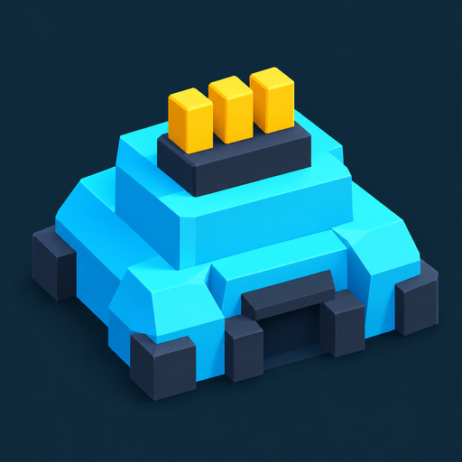
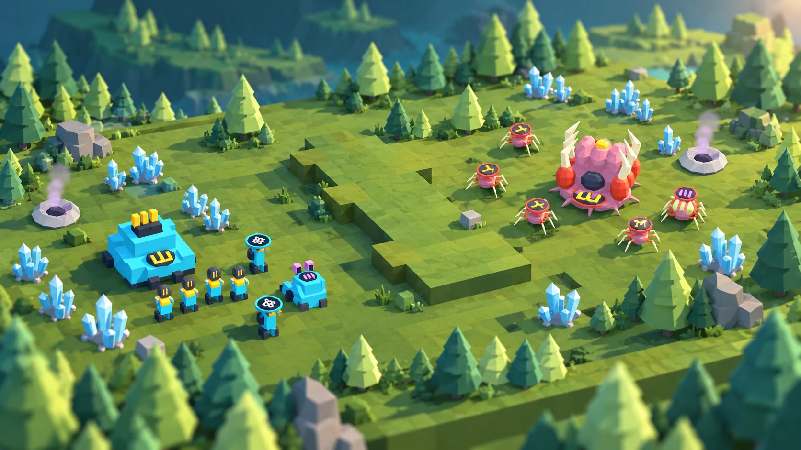

Facción industrial
The
Consortium
La cara mecánica del tablero. Trabajadores, unidades y edificios de identidad industrial.
Industrial
LITTLEEstrategia en tiempo real · En miniatura
Un tablero. Tu ejército.
Y un montón de decisiones.
La próxima gran batalla
empieza en pequeño.

Arte conceptualEstrategia en tiempo real
Partidas contra IA
Multijugador 1v1
Dos facciones
01 / El juego
De los primeros trabajadores al último edificio enemigo: cada decisión cambia el tablero. Administrá tu base, prepará a tus unidades y encontrá el momento de avanzar.
Asigná trabajadores a recolectar minerales y gas. Una buena estrategia empieza mucho antes del primer combate.
Levantá edificios, producí unidades e investigá mejoras. Convertí tus recursos en un ejército listo para lo que viene.
Mové tus tropas, coordiná sus órdenes y destruí los edificios rivales. Practicá contra la IA o buscá un duelo 1v1.
02 / Elegí tu lado
La identidad de tu ejército empieza acá. Estas son las dos facciones que hoy dan vida al prototipo.
La cara mecánica del tablero. Trabajadores, unidades y edificios de identidad industrial.
IndustrialLa cara orgánica del tablero. Una identidad biológica para tu base y cada una de tus unidades.
BiologicalEn el prototipo, ambas comparten reglas y estadísticas. Cambian sus nombres y su apariencia.
03 / El campo de juego se expande
Little Legion nació en realidad mixta. Ahora llevamos ese mismo juego a más pantallas, paso a paso.
Proyecto en desarrollo.
Estas versiones todavía no tienen un lanzamiento público en tiendas.
El tablero en tu mesa o en el piso. Estrategia en realidad mixta con mandos.
Prototipo en pruebasLa versión Unity WebGL, con ratón y teclado o controles táctiles.
En desarrollo y pruebasVersiones nativas con controles táctiles, actualmente en pruebas.
En desarrollo y pruebasTodavía estamos construyendo
Avances, código y documentación del proyecto.
Seguí cómo crece Little Legion.